#6420 Zwölf Runden
Alternativ: 12 Rounds
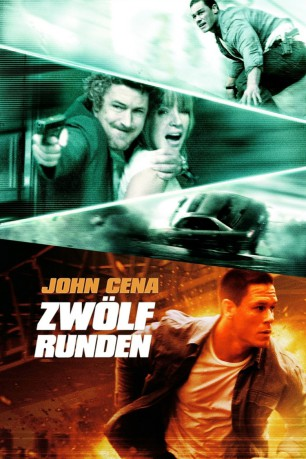 
 IMDB-Wertung: 5.6 / 10
IMDB-Wertung: 5.6 / 10  Metascore: 0
Metascore: 0 
Polizist Danny gelingt es, den genialen Verbrecherkönig Miles bei einem spektakulären Millionen-Raub zu verknacken. Dabei kommt die Freundin des Gangsterbosses durch ein Unglück um. Der macht dafür Danny verantwortlich und schwört im Gefängnis Rache. Als Miles aus dem Knast ausbricht und Dannys Verlobte Molly entführt, muss dieser zwölf schier unlösbare Aufgaben bewältigen, sonst wird sie sterben.
Jahr: 2009
Dauer: 109 Minuten
FSK: 16
Land: USA Studio: Fox AtomicTonspuren: DTS - ,
Untertitel: Deutsch,
Auflösung: 1080p (1920x800) Größe: 10649 MB
Genre: Action, Thriller, Krimi
Regisseur:  Renny Harlin
Renny Harlin
Drehbuch: Daniel Kunka
Soundtrack:
Darsteller:
 John Cena als Danny Fisher
John Cena als Danny Fisher Aidan Gillen als Miles Jackson
Aidan Gillen als Miles Jackson- 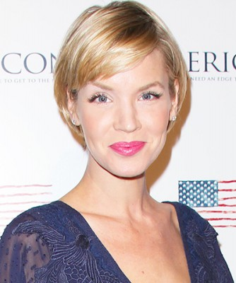 Ashley Scott als Molly Porter
- Steve Harris als George Aiken
- 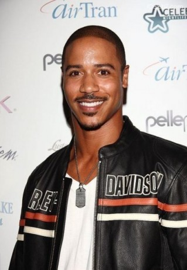 Brian White als Hank Carver
 Gonzalo Menendez als Ray Santiago
Gonzalo Menendez als Ray Santiago- Taylor Cole als Erica Kessen
- 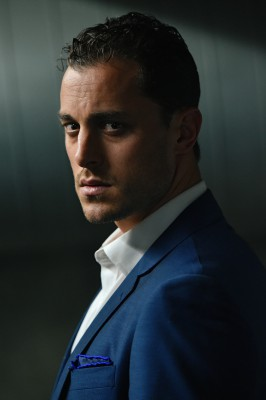 Kyle Clements als Dave Fisher
- Travis Davis als Anthony Deluso
- 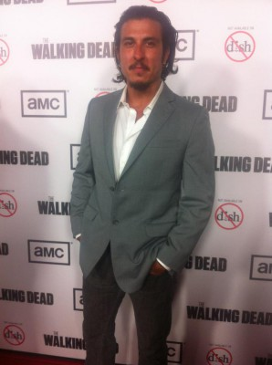 Nick Gomez als Samuel
 Billy Slaughter als Technician
Billy Slaughter als Technician- 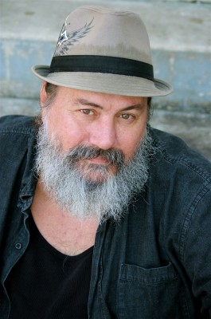 Kim Collins als Phil the Plumber
 Lara Grice als Cell Store Owner
Lara Grice als Cell Store Owner Douglas M. Griffin als Peter Gerard
Douglas M. Griffin als Peter Gerard- Vincent Flood als Detective Chuck Jansen
 Robert Pralgo als Camouflaged Agent
Robert Pralgo als Camouflaged Agent- Wally Crowder als Streetcar Conductor
- Luke Albright als Johnny Jenkins
- 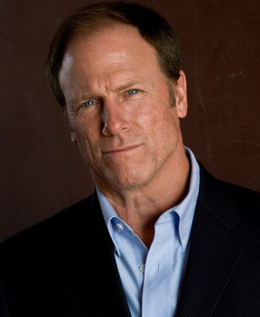 Louis Herthum als BEP Employee
- David Frye als Officer Phelps
- Bill Martin Williams als Ferry Patrolman
 J. Omar Castro als FBI Agent
J. Omar Castro als FBI Agent- Roy Huang als Sharpshooter
- Mikki Val als Nurse
- Jada Kay als Jesse Lou Mackie
- Pauline Boudreaux als Medic
- 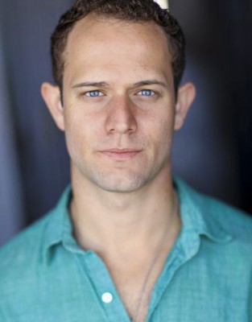 Hunter Burke als Hot Tub Man / Hotel Employee
- Kimberly Bailey als Additional Voices
- Doug Burch als Additional Voices
 Cathy Cavadini als Additional Voices
Cathy Cavadini als Additional Voices- 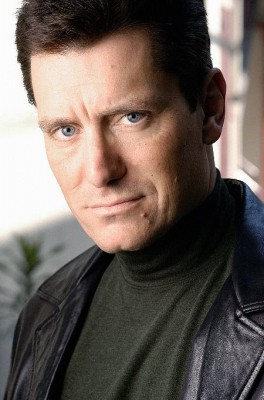 John DeMita als Additional Voices
- Greg Finley als Additional Voices
- Amad Jackson als Additional Voices
- Jason Pace als Additional Voices
- Richard Penn als Additional Voices
- 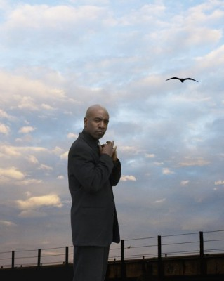 Michael Ralph als Additional Voices
- Joel Swetow als Additional Voices
- Ruth Zalduondo als Additional Voices
- Shaun Grant als Police Officer
- Seaun Boseda als Street Car Passenger , uncredited
- David E. Brown als Mistaken Miles , uncredited
- 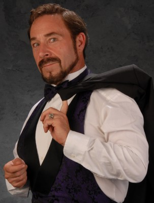 Edward R. Cox als FBI Agent , uncredited
- Renny Harlin als Air Traffic Control , uncredited
 Laurie Lee als FBI Witness , uncredited
Laurie Lee als FBI Witness , uncredited- Audrey Lynn als Police Detective / Computer Specialist , uncredited
 Sam Medina als Henchmen , uncredited
Sam Medina als Henchmen , uncredited- Gary Michael Smith als Police Officer , uncredited
- Corey Stewart als Construction Worker , uncredited
- Martha Twombly als Hospital Staff , uncredited
 Michael Wozniak als Foreman , uncredited
Michael Wozniak als Foreman , uncredited
Datei: X:\2-Dilogie(N-Z)\Zwölf Runden\Zwölf Runden (2009, FSK16, 1920x800).mkv seit 20.06.2017
Festplatte: HD Collection-2(A-Z)-3(A-M)
 Alle Filme aus Gruppe '2-Dilogie(N-Z)\Zwölf Runden'
Alle Filme aus Gruppe '2-Dilogie(N-Z)\Zwölf Runden'